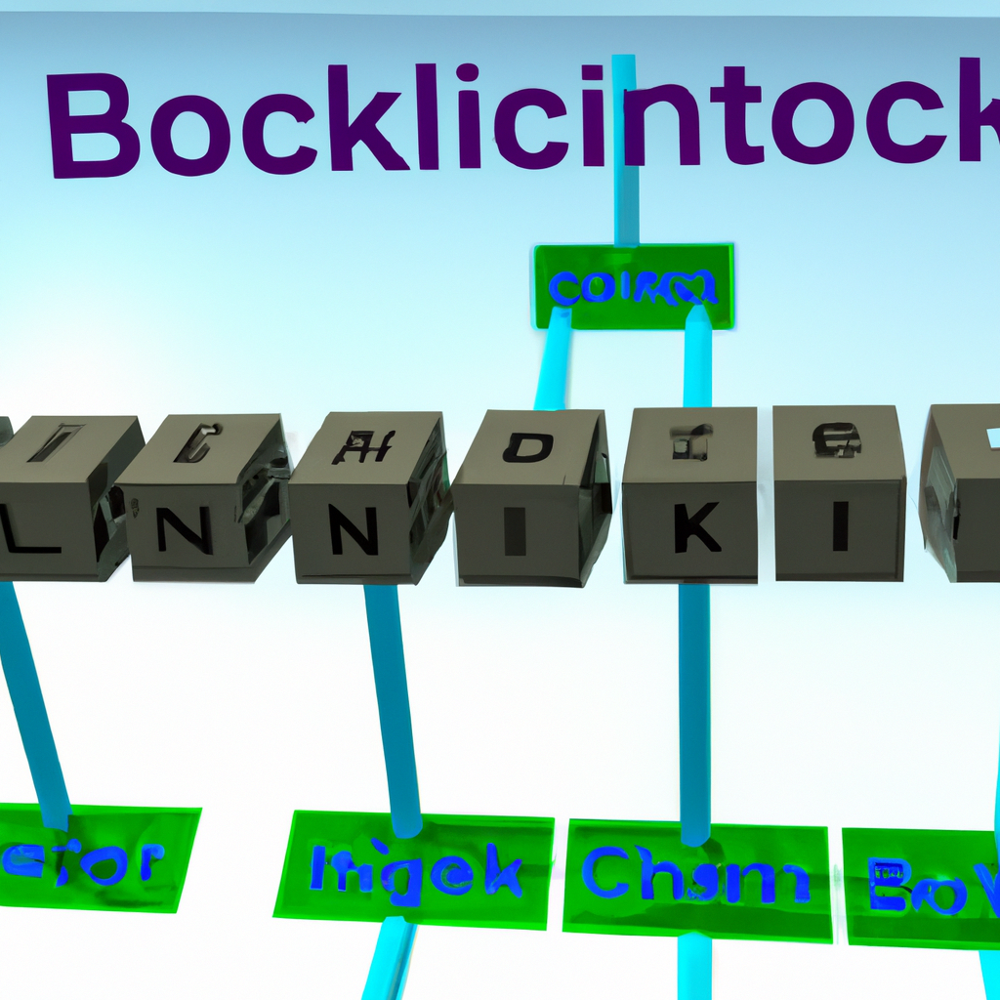

Blockchain interoperability
The blockchain is a revolutionary technology that has the potential to revolutionize the way we do business. However, one of the biggest challenges facing the blockchain is interoperability. Interoperability refers to the ability of different blockchains to communicate with each other and share data. Currently, different blockchains are unable to communicate with each other due to different protocols and standards, making it difficult for businesses to use multiple blockchains for different tasks.
The lack of interoperability in the blockchain is preventing businesses from taking full advantage of the technology and creating a unified platform for all users. To address this issue, AI can be used to improve the performance of blockchains and make them more interoperable. AI can be used to analyze and categorize data, which can help make different blockchains more compatible with each other. AI can also be used to identify and eliminate bottlenecks in the blockchain, allowing for better performance and scalability. Additionally, AI can be used to detect malicious activities and protect the blockchain from malicious actors.
Overall, AI can be used to improve the performance and interoperability of blockchains. With AI, businesses can take full advantage of the blockchain and create a unified platform for all users. AI can also help create a secure and efficient platform for all users, ensuring that the blockchain is safe and reliable.